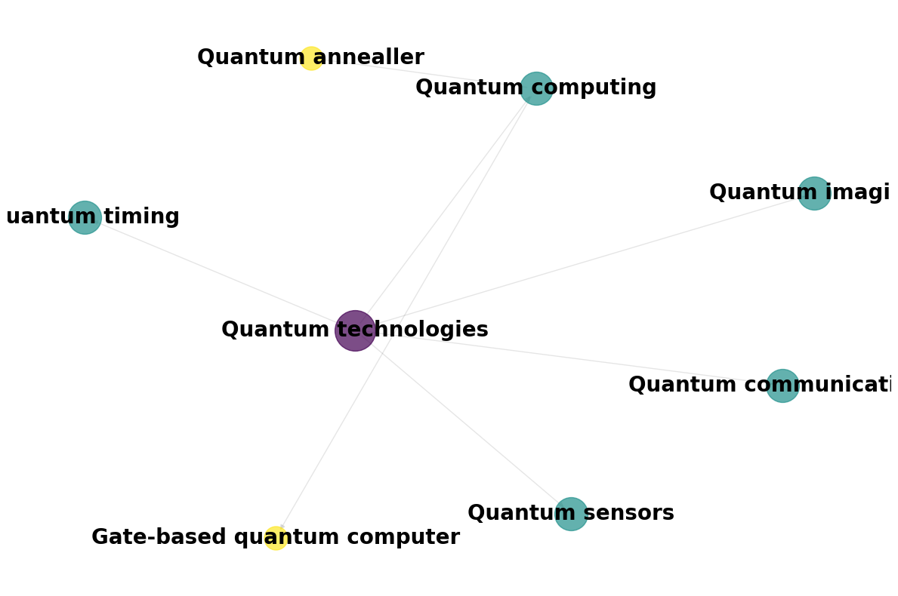

import matplotlib.pyplot as pltimport networkx as nximport pandas as pdfrom keybert import KeyBERTfrom spacy.lang.en import Englishimport torchfrom sentence_transformers import SentenceTransformerfrom transformers import pipeline as transformers_pipelineimport contextlibimport warningswarnings.filterwarnings("ignore")pd.set_option('display.max_colwidth', 160)
Introduction
This guide serves as a comprehensive overview of the DSIT Taxonomy Classification system. The project combines multiple approaches to accurately classify UKRI-funded research projects into standardised taxonomies, providing both classifications and confidence scores.
DSIT Taxonomy System Architecture
Key Components
Taxonomy Processing:
Standardisation of multiple research taxonomies (CWTS, GOScience, OpenAlex)
Hierarchical relationship preservation
Generation of both full and bottom-level taxonomies
Example taxonomies loaded:
CWTS Topics: 4798 labels
GOScience: 305 labels
Example project:
Title: Exploring the dark universe with quantum technologies
Abstract: The search to understand the nature of the elusive dark matter in our universe, making up 85% of its mass, is amongst the highest scientific priorities around the world. Terrestrial experiments focus efforts on Weakly Interacting Massive Particles (WIMPs) with ultra-low background experiments, operating many tonnes of target mass in deep underground sites. Such experiments have swept the bulk of the available electroweak parameter space for WIMPs and in the next decade will approach an irreducib...
1. Taxonomy Processing
The first step in our pipeline is processing different research taxonomies into a standardised format. Each taxonomy has its unique structure and characteristics, but all need to be transformed into a consistent format for downstream matching.
1.1 Understanding Taxonomy Structures
Let’s examine the structure of our processed taxonomies:
Each taxonomy is processed to include: - Full hierarchical path (label) - Unique identifier path (id_path or level_path) - Hierarchy level (level) - Unique identifier (uuid)
1.2 Hierarchical Relationships
The taxonomies maintain their hierarchical structure through path-based representation. Let’s visualise a branch of the Goscience taxonomy:
Code
def create_taxonomy_network( taxonomy_df: pd.DataFrame, root_label: str, figsize: tuple= (12, 8), show_labels: bool=False, font_size: int=20,) ->None:""" Create a network visualization using networkx with optional node labels. Args: taxonomy_df: DataFrame containing taxonomy with columns 'label' and 'level' root_label: The root label to start the branch from figsize: Figure size tuple (width, height) show_labels: Whether to display node labels font_size: Size of the label text (only used if show_labels=True) """# Get branch data branch = taxonomy_df[taxonomy_df['label'].str.startswith(root_label)].copy()# Create directed graph G = nx.DiGraph()# Add nodes and edgesfor _, row in branch.iterrows(): hierarchy = row['label'].split(' > ')for i inrange(len(hierarchy)): current =' > '.join(hierarchy[:i+1]) parent =' > '.join(hierarchy[:i]) if i >0elseNone# Add node with level information and just the last part of hierarchy as label G.add_node(current, label=hierarchy[i], level=i)# Add edge from parent if existsif parent: G.add_edge(parent, current)# Calculate layout (adjust k based on whether labels are shown) k_value =2if show_labels else1 pos = nx.spring_layout(G, k=k_value, iterations=50)# Create figure plt.figure(figsize=figsize)# Get max level for scaling max_level =max(nx.get_node_attributes(G, 'level').values())# Draw edges nx.draw_networkx_edges(G, pos, edge_color='gray', alpha=0.2)# Draw nodes for each levelfor level inrange(max_level +1): nodes_at_level = [node for node, attr in G.nodes(data=True) if attr['level'] == level]if nodes_at_level: nx.draw_networkx_nodes( G, pos, nodelist=nodes_at_level, node_size=1000* (max_level - level +1) / max_level, # Size decreases with level node_color=[plt.cm.viridis(level / max_level)], # Color based on level alpha=0.7, )# Add labels if requestedif show_labels: labels = nx.get_node_attributes(G, 'label') nx.draw_networkx_labels( G, pos, labels, font_size=font_size, font_weight='bold', ) plt.axis('off') plt.tight_layout()return plt.gcf()fig = create_taxonomy_network( goscience_taxonomy,"Quantum technologies", figsize=(12, 8), show_labels=True,)

Let’s also consider a branch of the CWTS taxonomy:
This standardised format ensures that all taxonomies can be processed consistently in the downstream matching pipeline, while preserving their unique hierarchical relationships and domain knowledge.
2. Keyword Processing
Before matching projects to taxonomies, we extract and process keywords using multiple methods to capture different aspects of the research content.
2.1 Keyword Extraction Methods
The system uses four complementary keyword extractors:
def show_keyword_examples(project_text: str):"""Show example keywords from each extractor."""from dsit_taxonomy.pipelines.keyword_processing_gtr.utils import ( get_dbp_annotation, get_rake_keywords, get_yake_keywords, get_keybert_keywords, )print("Input text:", project_text[:200], "...\n")print("1. DBpedia Spotlight (Knowledge Base Linking):")print(get_dbp_annotation(project_text)[:5])print("\n2. RAKE (Statistical Extraction):")print(get_rake_keywords(project_text)[:5])print("\n3. YAKE (Unsupervised Extraction):")print(get_yake_keywords(project_text)[:5])print("\n4. KeyBERT (Semantic Extraction):") kw_extractor = KeyBERT("all-MiniLM-L6-v2")print([k for k in get_keybert_keywords(project_text, kw_extractor)][:5])# Show examples using our sample projectshow_keyword_examples( example_project['title'] +". "+ example_project['abstract_text'])
Input text: Exploring the dark universe with quantum technologies. The search to understand the nature of the elusive dark matter in our universe, making up 85% of its mass, is amongst the highest scientific prio ...
1. DBpedia Spotlight (Knowledge Base Linking):
['Quantum', 'Alpha decay', 'Nanometre', 'Dark matter', 'Universal Classic Monsters']
2. RAKE (Statistical Extraction):
['wimp thermal relic dark matter candidates', 'whilst also providing directional information', 'highest scientific priorities around', 'available electroweak parameter space', '150 nm quartz sphere']
3. YAKE (Unsupervised Extraction):
['dark matter', 'Weakly Interacting Massive', 'Interacting Massive Particles', 'dark', 'elusive dark matter']
4. KeyBERT (Semantic Extraction):
['dark matter sensing', 'sensitivity dark matter', 'elusive dark matter', 'dark matter scattering', 'galactic dark matter']
Each method brings different strengths: - DBpedia: Links to knowledge base concepts - RAKE: Statistical approach using word co-occurrence - YAKE: Unsupervised extraction with text features - KeyBERT: Transformer-based semantic extraction
2.2 Keyword Aggregation
Keywords from different extractors are combined using a consensus approach:
from dsit_taxonomy.pipelines.keyword_processing_gtr.nodes import ( aggregate_keyword_annotators)def demonstrate_keyword_aggregation(keywords_by_extractor):"""Show how keywords are aggregated across extractors. Args: keywords_by_extractor: Dictionary of extractor names and their keywords Returns: DataFrame with aggregated keywords and their counts """# Create sample DataFrames for each extractor dfs = { name: pd.DataFrame({'project_id': ['example_proj'],f'{name}_keywords': [kws] }) for name, kws in keywords_by_extractor.items() }# Aggregate keywords and returnreturn aggregate_keyword_annotators(*dfs.values())example_keywords = {'dbp': ['machine learning', 'artificial intelligence', 'neural networks'],'rake': ['machine learning', 'deep learning', 'data science'],'yake': ['artificial intelligence', 'neural networks', 'ml algorithms'],'keybert': ['machine learning', 'neural networks', 'deep learning']}# Get resultsresults = demonstrate_keyword_aggregation(example_keywords)
Key features of the aggregation: - Only keeps keywords found by multiple extractors - Counts extractor agreement for confidence - Maintains project-keyword mappings - Generates unique identifiers for tracking
3. Similarity Matching
The similarity matching pipeline combines evidence from multiple levels to create robust taxonomy assignments. This multi-level approach helps capture both broad thematic alignment and specific technical matches.
3.1 Document Preprocessing
First, projects are preprocessed into different granularity levels:
from dsit_taxonomy.pipelines.project_similarity_matching.nodes import ( document_preprocessing,)def demonstrate_preprocessing(project):"""Show document preprocessing steps."""# Create sample DataFrame df = pd.DataFrame( {"project_id": [project["project_id"]],"title": [project["title"]],"abstract_text": [project["abstract_text"]],"tech_abstract_text": [project["tech_abstract_text"]],"potential_impact": [project["potential_impact"]], } )# Process documents project_df, sentences_df = document_preprocessing(df)print("1. Combined Project Text (first 200 chars):")print(project_df["text"].iloc[0][:200], "...\n")print("2. Split Sentences (first 3):")for i, row in sentences_df.head(3).iterrows():print(f"Sentence {i+1}: {row['sentence_text']}")# Demonstrate preprocessingdemonstrate_preprocessing(example_project)
1. Combined Project Text (first 200 chars):
Exploring the dark universe with quantum technologies. The search to understand the nature of the elusive dark matter in our universe, making up 85% of its mass, is amongst the highest scientific prio ...
2. Split Sentences (first 3):
Sentence 1: Exploring the dark universe with quantum technologies.
Sentence 1: The search to understand the nature of the elusive dark matter in our universe, making up 85% of its mass, is amongst the highest scientific priorities around the world.
Sentence 1: Terrestrial experiments focus efforts on Weakly Interacting Massive Particles (WIMPs) with ultra-low background experiments, operating many tonnes of target mass in deep underground sites.
3.2 Multi-Level Matching
The system computes similarities at three levels:
Global Project Matching:
Compares full project text to taxonomy labels
Captures overall thematic alignment
Uses cosine similarity with normalised vectors
Sentence-Level Matching:
Identifies specific relevant passages
Provides granular evidence for assignments
Enables traceability of matches
Keyword-Level Matching:
Leverages extracted and validated keywords
Boosts scores based on terminology overlap
Helps with technical term matching
def demonstrate_matching_levels(text, taxonomy_label):"""Show similarity computation at different levels."""# Load model model = SentenceTransformer('all-MiniLM-L6-v2')# Compute embeddings text_emb = model.encode(text) label_emb = model.encode(taxonomy_label)# Normalise vectors text_emb = text_emb / torch.norm(torch.tensor(text_emb)) label_emb = label_emb / torch.norm(torch.tensor(label_emb))# Compute similarity similarity = torch.dot(torch.tensor(text_emb), torch.tensor(label_emb)).item()return similarity
Example taxonomy label: Physical Sciences > Physics > Quantum Physics
Similarity Scores:
1. Global Project Match:
Score: 0.250
2. Sentence Match (first sentence):
Score: 0.241
# Example taxonomy labelexample_label ="Physical Sciences > Physics and Astronomy > Nuclear and High Energy Physics > Particle Dark Matter and Detection Methods"print("Example taxonomy label:", example_label)print("\nSimilarity Scores:")print("\n1. Global Project Match:")global_sim = demonstrate_matching_levels( example_project['abstract_text'], example_label)print(f"Score: {global_sim:.3f}")print("\n2. Sentence Match (first sentence):")sent_sim = demonstrate_matching_levels( example_project['abstract_text'].split('.')[0], example_label)print(f"Score: {sent_sim:.3f}")
Example taxonomy label: Physical Sciences > Physics and Astronomy > Nuclear and High Energy Physics > Particle Dark Matter and Detection Methods
Similarity Scores:
1. Global Project Match:
Score: 0.496
2. Sentence Match (first sentence):
Score: 0.514
3.3 Score Combination
The final scores combine evidence from all levels using weighted aggregation:
The pruning thresholds are dynamically computed using score distributions:
\[
\text{threshold}(s) = \begin{cases}
Q_3(s) & \text{for high confidence} \\
Q_2(s) & \text{for medium confidence}
\end{cases}
\]
This approach ensures that: 1. Classifications are supported by multiple evidence types 2. Higher-level topics are preserved when appropriate 3. Confidence scores reflect evidence quality and agreement 4. All assignments remain traceable to source evidence
These pruned scores form the foundation for the final confidence refinement stage.
4. Refinement and Validation
The final pipeline stage refines the similarity scores into confidence-based assignments and validates them using zero-shot classification.
4.1 Score Aggregation
First, granular scores are aggregated to project-label pairs:
The aggregation process: 1. Combines evidence from multiple sentences 2. Computes project-level relevance scores 3. Assigns initial confidence bins based on both global and local patterns
4.2 Zero-shot Scores
The system then validates assignments using zero-shot classification:
def demonstrate_zeroshot(project_text, taxonomy_label):"""Show zero-shot validation process.""" classifier = transformers_pipeline("zero-shot-classification", model="tasksource/ModernBERT-large-nli", device=-1, # CPU truncation=False, ) result = classifier( project_text, candidate_labels=[taxonomy_label], hypothesis_template="This text is about {}.", )return resultzeroshot_score = demonstrate_zeroshot( example_project["abstract_text"], "Quantum Physics")
Project Abstract:
The search to understand the nature of the elusive dark matter in our universe, making up 85% of its mass, is amongst the highest scientific priorities around the world. Terrestrial experiments focus ...
Zero-shot Classification Results:
Label: Quantum Physics
Confidence: 0.960
The zero-shot scores are binned into confidence levels:
Code
print("\nBin Thresholds:")print("- very high: ≥ 0.90")print("- high: ≥ 0.70")print("- medium: ≥ 0.50")print("- low: ≥ 0.25") print("- very low: < 0.25")
Bin Thresholds:
- very high: ≥ 0.90
- high: ≥ 0.70
- medium: ≥ 0.50
- low: ≥ 0.25
- very low: < 0.25
These zero-shot confidence bins are then combined with the sentence-level confidence bins to produce three different confidence measures: 1. max_confidence: Takes the highest bin between sentence and zero-shot 2. zeroshot_favouring_confidence: Uses zero-shot bin when there’s significant disagreement, selects higher score if minor disagreement. 3. sentence_favouring_confidence: Uses sentence bin when there’s significant disagreement, selects higher score if minor disagreement.
The choice between these measures depends on the taxonomy and use case:
CWTS Research Topics
Method
Precision
Recall
F1
Zero-shot favoured
0.765
0.691
0.726
Zero-shot
0.784
0.661
0.717
Maximum
0.645
0.747
0.692
GOScience Technologies
Method
Precision
Recall
F1
Zero-shot
0.646
0.664
0.655
Zero-shot favoured
0.580
0.678
0.625
Maximum
0.350
0.760
0.479
The choice of confidence measure mainly depends on the balance between precision and recall needs. Favouring zero-shot reduces precision while increasing recall, suggesting a trade-off when partially leveraging sentence scores to decide when minor disagreement.
5. Fine-tuning and Validation
The system uses a tuning and validation pipeline that combines expert LLM-based evaluation with parameter optimisation.
5.1 Sample Selection
First, we select a representative sample of projects for validation:
Code
def demonstrate_sample_selection(projects_df, sample_size=100):"""Show the sample selection process."""from dsit_taxonomy.pipelines.project_similarity_tune_and_validate.nodes import ( select_sample_projects ) sample = select_sample_projects( projects_df, sample_size=sample_size, sample_random_state=42 )print(f"Selected {len(sample)} projects for validation")print("\nSample characteristics:")print(f"- Average abstract length: {sample['abstract_text'].str.len().mean():.0f} chars")print(f"- Projects with technical abstracts: {(sample['tech_abstract_text'].notna().sum())}")print(f"- Projects with impact statements: {(sample['potential_impact'].notna().sum())}")return sample# Example sample selectionvalidation_sample = demonstrate_sample_selection(projects)
Selected 100 projects for validation
Sample characteristics:
- Average abstract length: 2009 chars
- Projects with technical abstracts: 8
- Projects with impact statements: 28
5.2 Expert Label Generation
The system uses GPT-4 with retrieval-augmented generation to independently identify relevant taxonomy labels:
Code
def show_expert_labeling_process(project_text: str, taxonomy_df: pd.DataFrame):"""Demonstrate the expert labeling process."""print("1. Retrieval Setup:")print("- Embedding taxonomy labels")print("- Creating vector store")print("- Setting up RAG chain")print("\n2. Expert Prompt:")print("System: You are an expert research taxonomy analyst...")print("CONFIDENCE LEVELS:")print("- HIGH: Perfect match with project's core focus")print("- MEDIUM: Related or partially overlapping field")print("- LOW: Tangential connection")print("\n3. Example Project:")print(f"Text: {project_text[:200]}...")print("\n4. Retrieved Context:")print("Top-3 similar taxonomy labels:")# Simulate retrieval resultsprint("1. Physics > Quantum Physics")print("2. Computer Science > Quantum Computing")print("3. Mathematics > Applied Mathematics")print("\n5. Expert Output:")print("""[ { "taxonomy_label": "Physics > Quantum Physics", "likelihood": "high", "explanation": "Direct focus on quantum physics principles" }, { "taxonomy_label": "Computer Science > Quantum Computing", "likelihood": "medium", "explanation": "Applications discussed but not primary focus" }]""")# Demonstrate expert labelingshow_expert_labeling_process( example_project['abstract_text'], cwts_taxonomy)
1. Retrieval Setup:
- Embedding taxonomy labels
- Creating vector store
- Setting up RAG chain
2. Expert Prompt:
System: You are an expert research taxonomy analyst...
CONFIDENCE LEVELS:
- HIGH: Perfect match with project's core focus
- MEDIUM: Related or partially overlapping field
- LOW: Tangential connection
3. Example Project:
Text: The search to understand the nature of the elusive dark matter in our universe, making up 85% of its mass, is amongst the highest scientific priorities around the world. Terrestrial experiments focus ...
4. Retrieved Context:
Top-3 similar taxonomy labels:
1. Physics > Quantum Physics
2. Computer Science > Quantum Computing
3. Mathematics > Applied Mathematics
5. Expert Output:
[
{
"taxonomy_label": "Physics > Quantum Physics",
"likelihood": "high",
"explanation": "Direct focus on quantum physics principles"
},
{
"taxonomy_label": "Computer Science > Quantum Computing",
"likelihood": "medium",
"explanation": "Applications discussed but not primary focus"
}
]
5.3 Expert Validation
The system also uses an expert LLM to validate the quality of matches by identifying true and false positives:
Code
def show_expert_validation():"""Show how expert validation works.""" example = {"Project": "Quantum Computing Research","Description": """We develop novel quantum computing algorithms for optimization problems, leveraging principles from quantum physics and information theory.""","Candidates": [ {"taxonomy_label_id": "qc_001","label": "Computer Science > Quantum Computing","score": 0.85 }, {"taxonomy_label_id": "math_042","label": "Mathematics > Optimization","score": 0.45 } ] }print("Expert Validation Process:")print("\nProject Description:")print(example["Description"])print("\nCandidate Labels:")for candidate in example["Candidates"]:print(f"\nLabel: {candidate['label']}")print(f"Score: {candidate['score']:.2f}")print("\nExpert Assessment:")print("""[ { "taxonomy_label_id": "qc_001", "positive": true, "explanation": "Core focus on quantum computing algorithms" }, { "taxonomy_label_id": "math_042", "positive": false, "explanation": "Optimization is application area, not core focus" }]""")show_expert_validation()
Expert Validation Process:
Project Description:
We develop novel quantum computing algorithms
for optimization problems, leveraging principles from quantum physics
and information theory.
Candidate Labels:
Label: Computer Science > Quantum Computing
Score: 0.85
Label: Mathematics > Optimization
Score: 0.45
Expert Assessment:
[
{
"taxonomy_label_id": "qc_001",
"positive": true,
"explanation": "Core focus on quantum computing algorithms"
},
{
"taxonomy_label_id": "math_042",
"positive": false,
"explanation": "Optimization is application area, not core focus"
}
]
The expert validation: 1. Considers the core focus of the project 2. Evaluates research methods and approaches 3. Assesses intended outcomes and impact 4. Provides explanations for each decision
This validation helps identify both high-scoring false positives and lower-scoring true positives, which is crucial for: - Validating pruning thresholds - Identifying systematic matching errors - Understanding classification edge cases - Improving overall system accuracy
5.4 Parameter Optimisation
The system performs grid search over parameter combinations to find optimised settings:
The system uses validation metrics (precision, recall, F1 scores) for both strict and relaxed thresholds to estimate the most accurate settings.
6. Practical Usage and Best Practices
6.1 Running the Pipeline
The complete classification pipeline can be run using Kedro:
# Run the complete pipelinekedro run# Run specific pipeline moduleskedro run --pipeline data_processing_taxonomieskedro run --pipeline keyword_processing_gtrkedro run --pipeline project_similarity_matchingkedro run --pipeline project_similarity_refinement
6.2 Configuration
Key configuration files: - conf/base/credentials.yml: Main pipeline credentials. Not shared for security reasons. - conf/base/parameters_project_similarity_matching.yml: Matching parameters - conf/base/parameters_project_similarity_refinement.yml: Refinement parameters - conf/base/catalog.yml: Data source configurations
6.3 Best Practices
Data Quality
Ensure project descriptions are complete and well-formatted
Include technical abstracts when available
Pre-process text to remove formatting artifacts
Taxonomy Management
Keep taxonomies in standardized format
Validate hierarchical relationships
Maintain unique identifiers for all labels
Performance Optimization
Use recommended parameter combinations for your use case
Monitor precision/recall trade-offs
Regularly validate against expert assessments
System Maintenance
Update model dependencies as needed
Monitor API usage for external services
Keep validation sets current
6.4 Troubleshooting
Common issues and solutions:
Low Match Quality
Check text preprocessing quality
Verify taxonomy coverage for domain
Review confidence thresholds
Performance Issues
Use batch processing for large datasets
Enable caching for embeddings
Optimize database queries
Integration Problems
Verify API credentials
Check input/output formats
Monitor service endpoints
6.5 Monitoring
Key metrics to track: 1. Classification quality (precision, recall, F1) 2. Processing efficiency 3. Resource utilization 4. API service health 5. Data quality metrics